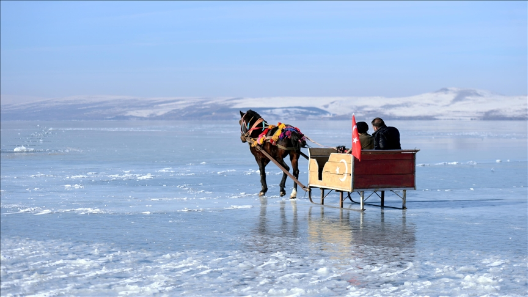
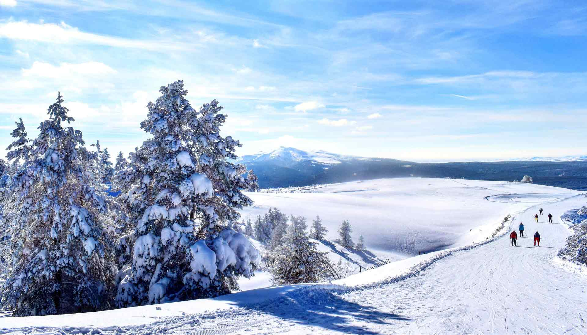
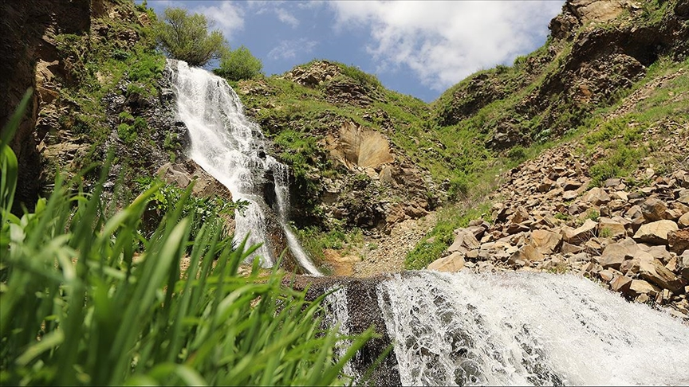
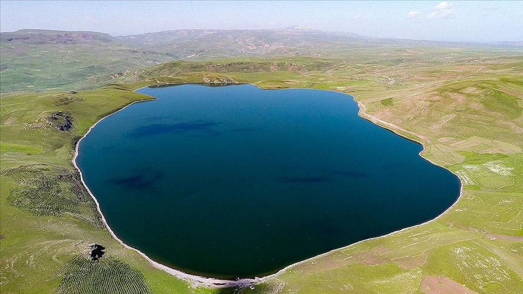

Kışın tamamen donan bu göl, üzerinde kızakla gezinti ve buz balıkçılığı yapılan eşsiz bir doğa harikasıdır.
Konum: Çıldır/Ardahan – Kars sınırı
Aktiviteler: Buz üstü kızak, balıkçılık, fotoğrafçılık
Giriş: Ücretsiz

Sarıkamış Kayak Merkezi’nin çevresindeki çam ormanları, temiz havası ve muhteşem doğasıyla nefes keser.
Konum: Sarıkamış/Kars
Aktiviteler: Kayak, doğa yürüyüşü, kar tatili
Giriş: Ücretsiz

Yaz aylarında yeşillikler arasında serinlemek isteyenler için Susuz Şelalesi harika bir kaçış noktasıdır.
Konum: Susuz ilçesi, Kars
Aktiviteler: Piknik, yürüyüş, doğa fotoğrafçılığı
Giriş: Ücretsiz

Volkanik bir göl olan Aygır Gölü, doğayla iç içe zaman geçirmek isteyenlerin huzur dolu adreslerinden biridir.
Konum: Susuz ilçesi yakınları, Kars
Aktiviteler: Göl manzarası, kamp, yürüyüş
Giriş: Ücretsiz